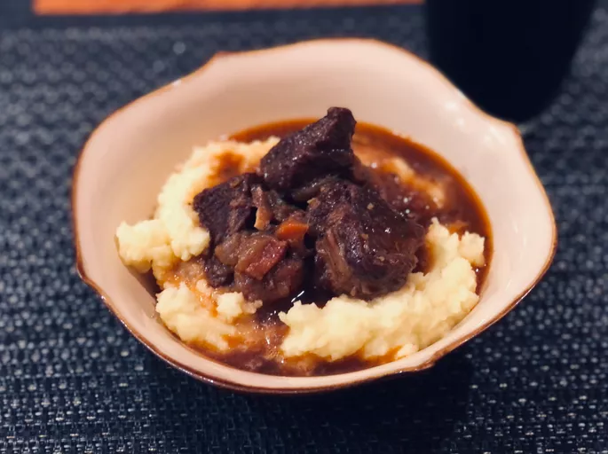

Beef and Guiness stew

Description
This hearty stew combines tender beef, root vegetables, and the rich
flavor of Guinness beer for a comforting meal perfect for cold days.
Ingredients
- 2 pounds beef chuck, cut into chunks
- 2 tablespoons olive oil
- Salt and pepper to taste
- 1 large onion, chopped
- 2 cloves garlic, minced
- 4 carrots, peeled and sliced
- 4 potatoes, peeled and diced
- 2 cups beef broth
- 1 cup Guinness beer
- 2 tablespoons tomato paste
- 2 bay leaves
- 1 teaspoon dried thyme
- Chopped fresh parsley for garnish
Steps
-
Heat olive oil in a large pot over medium-high heat. Season beef chunks
with salt and pepper, then brown them in the pot in batches. Remove and
set aside.
-
In the same pot, add chopped onions and garlic. Cook until onions are
translucent.
-
Return the beef to the pot. Add carrots, potatoes, beef broth, Guinness
beer, tomato paste, bay leaves, and thyme.
-
Bring the stew to a boil, then reduce heat to low and simmer covered for
about 2 hours, stirring occasionally, until the beef is tender and the
flavors have melded.
- Serve hot, garnished with chopped parsley.